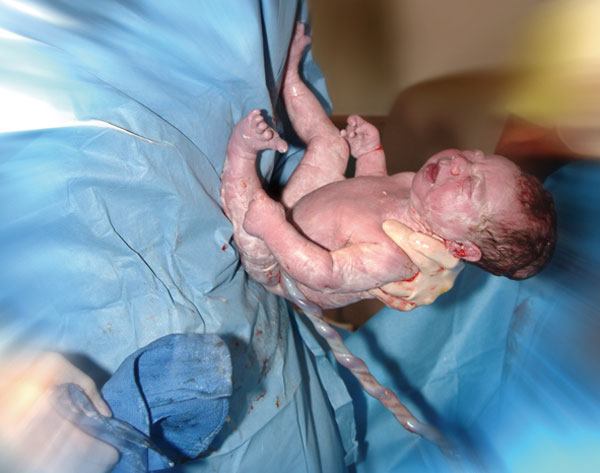

Emergency Childbirth
Emergency Childbirth
At some time in the future, you may be called on to assist with the birth of a baby. This activity is a most rewarding one for a first aid provider, and there is no need to be frightened or nervous about it. The mother requires support and reassurance more than anything else, and if you appear calm and confident this will show her that you are someone to rely on.
Remember that women have been performing the function of childbirth for a long time, and the process is natural. You are there to provide any help that may be required during a process that is controlled by the mother. Your active intervention is necessary only in extreme situations.
Childbirth is open to infection. It is imperative that you take all possible precautions for mother and child against infection from yourself and from the surroundings.
 Ensure that you wear gloves during the process. If gloves are unavailable, ensure that you scrub your hands thoroughly with soap and warm water.
Ensure that you wear gloves during the process. If gloves are unavailable, ensure that you scrub your hands thoroughly with soap and warm water.
Change your gloves, or scrub your hands each time they come in contact with contaminated material, eg. faeces, blood, etc.
Childbirth occurs in three stages:
 1st Stage – the onset of labour
1st Stage – the onset of labour
 2nd Stage – the birth of the baby
2nd Stage – the birth of the baby
 3rd Stage – the delivery of the afterbirth
3rd Stage – the delivery of the afterbirth
First stage: Onset of labour
The onset of labour may last between 2 and 24 hours. It begins with cramp-like pains in the lower abdomen, a 'heavy' feeling low down near the pubic area, or some may experience back pain. The pains occur regularly every 5-20 minutes, and they last for approximately 30 seconds.
In some instances, examination of the woman's vagina may reveal a 'show' of bloodstained mucus heralding the imminent birth of the baby. At this point, urgent ambulance or medical attention should be sought.
During this stage, there may occur a 'breaking of the waters'; a sudden flow of fluid from the membrane around the baby.
If it is obvious that it is too late to move the woman to hospital, there is little you can do except keep the mother-to-be clean and provide reassurance.
Now that the birthing process has begun, you should prepare for it by organising:
 a large plastic sheet to cover the bed or floor
a large plastic sheet to cover the bed or floor
 two or three clean sheets
two or three clean sheets
 three clean linen or string ties about 25cm long
three clean linen or string ties about 25cm long
 sharp scissors which have been boiled and kept as sterile as possible
sharp scissors which have been boiled and kept as sterile as possible
 sterile pads (large combines are ideal) for the mother
sterile pads (large combines are ideal) for the mother
 a warm nappy or 'bunny rug' for the baby
a warm nappy or 'bunny rug' for the baby
 towels, face washers and warm water to clean the mother
towels, face washers and warm water to clean the mother
Second stage: Birth of the baby
At this stage, the baby has moved down further into the birth canal. The pains change to 'bearing down' pains. These contractions may stimulate the mother to want to pass a bowel motion. Do not let her go to the toilet unaccompanied! Check that medical aid is on the way.
The baby will move down the birth canal. There will usually be an increase in bloodstained mucus, and eventually the top of the baby's head will become visible – this is called 'crowning'. Most babies are born head-first, though occasionally a baby presents buttocks-first. This is known as a 'breech birth', and the mother may be unable to give birth without trained medical assistance.
When you observe the 'crowning' process, if possible again wash your hands or change your gloves if time allows. The mother may unavoidably pass a bowel motion. If this occurs, remove the faeces completely with a pad and cover the stained area.
The mother will be in some pain and have an urge to 'push'. Encourage her not to hold her breath. Help her stay calm and advise her to 'push' when the urge is very strong.
As the baby is gradually pushed through the opening of the birth canal, gently support its head – Do not pull the baby, as it will be delivered normally in successive contractions.
Should the umbilical cord be wound around the baby's neck, slide two fingers underneath it and gently ease it over the baby's head. There is enough slack in the cord to do this easily.
When the baby's head appears, it will initially face the anus, but as the baby is delivered, it will spontaneously rotate to face one side. This is quite normal.
Support the baby's head until the next contraction, during which the baby's shoulders will appear. At this point, shift your grip to approximately the baby's armpits and gently lift it towards the mother's abdomen as the final contraction expels it entirely from the birth canal. Take note of the time.
Very occasionally, the baby's head is born but the body is delayed (usually by the shoulders), ask the woman to change her position (try all fours or supported squat).
If the baby presents as a breech birth, it will be born body-first. The baby is unlikely to be expelled normally, so you must attempt to avoid the cord from becoming 'pinched' in the birth canal.
Gently pull down a loop of the cord to relieve the pressure. Get medical help urgently!
Care of the newborn infant
The baby will be wet and slippery, and at this stage will cool down rapidly. It is essential that you retain the baby's body heat by wrapping it in a warm cover. Give it to its mother to hold, taking care not to interfere with the cord.
After one minute, if the baby appears not to be breathing, clear the airway and begin resuscitation immediately!
After 2-3 minutes, the cord will stop pulsating. At this point, the baby is no longer dependent on the mother's circulatory system, and is ready to go it alone.
Use the linen or string ties to tie the cord firmly in three places: 10cm, 15cm, and 20cm from the baby's navel. Tie the cords firmly enough to prevent any flow of blood through it which may allow the baby to bleed.
You need not cut the cord if medical help is on the way, but if you are required to do so, cut the cord leaving TWO ties on the baby's side of the separation.
As soon as possible after the delivery, quickly assess the baby, noting the time it was delivered, its colour at birth (blue? dusky? pale?), any deformities or skin discolouration, strength of cry (loud and lusty, or weak), and whether the baby moves spontaneously, or just lies still. This is important information for the baby's subsequent medical examination. Repeat the examination after 5-10 minutes and note any changes. Keep the baby under constant observation.
Third stage: Delivery of the afterbirth (placenta)
The afterbirth, or placenta, was the source of the baby's blood supply in the uterus. With no further use, it will be expelled through the birth canal by contractions, similar to the birth of the baby.
This usually occurs 15-60 minutes after the baby's birth. During this time it is essential that you DO NOT apply pressure, or strain, on the cord or touch the mother's abdomen.
To encourage delivery of the placenta, ensure that the mother raises and parts her legs slightly. Put the baby on the mother's breast, as this will stimulate the uterus to contract and slow any bleeding. The placenta will be delivered by successive contractions.
After delivery, it is important that the placenta is retained for examination by a medical professional.
Care of the mother
Wash the mother and place dressing combines or sanitary pads in place. Take her pulse, assess her colour and check carefully for any further bleeding and what you may consider to be excessive blood loss. Provided she is conscious and not ill or drowsy, give her warm, sweet drinks and encourage her to rest. Keep her under constant observation.
Retain all bloodstained towels and pads for medical examination.
If requested by the mother, assist her with cleaning herself up and in changing her clothing.